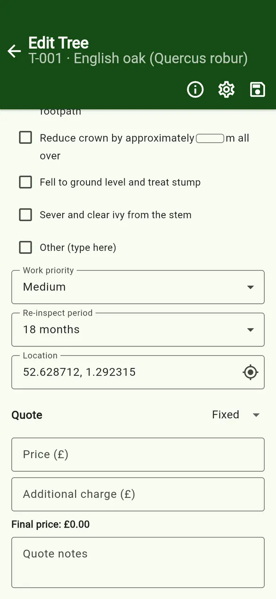

User guides › GPS location
GPS location
Record a tree’s latitude and longitude with a Location (GPS) field.
GPS is recorded through a Location (GPS) field. Add one to the project’s data structure if it is not there already.
- On the tree form, find the location field and tap the target icon (Use current GPS).
- The first time, the app explains why it needs location access, then your phone asks for permission. Allow location while using the app.
- The app shows Getting location… and fills in
latitude, longitude(six decimal places). - You can also type or correct the coordinates yourself.

If it does not work
- Location is turned off – turn on Location (GPS) in your phone settings.
- Location permission is off – open Settings and allow location for Tree Inspect. Everything else works without it.
- Could not get a GPS fix – the app waits up to 30 seconds. Try again with a clearer view of the sky.
GPS works without a mobile signal, because the phone’s GPS does not need the internet. Coordinates are stored only in your project on the phone. See the Privacy Policy.